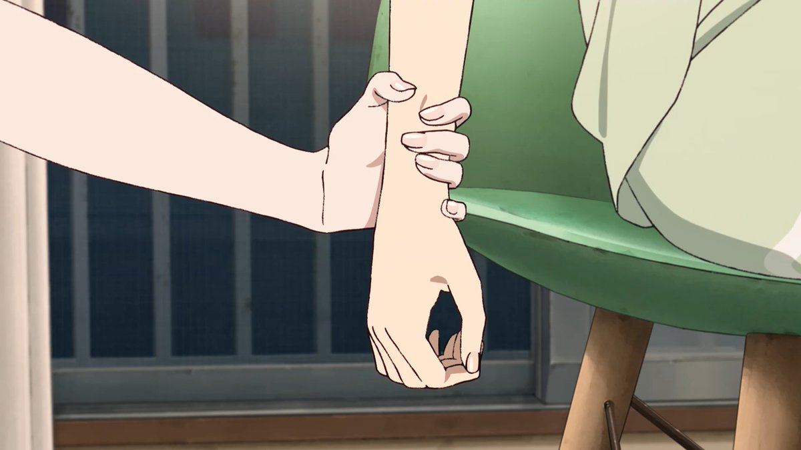

愿晚星照常升起（keep4o）
@tadatsukiei
@wolfy44231 我在剧中只要看到狐狸亲吻手势，都是默认她们在接吻的，只是没播出来。😋

白狼
@wolfy44231
手是百合的暗語，而CPK真的特別多有暗地敘事的特寫鏡頭。
從年幼懵懂的輝耀主動握住彩葉的手腕尋求安全感，到二人愛情萌芽的「狐狸親吻」，到彩葉主動握緊輝耀的手來挽留，最後到相隔八千年、心意相通後的「狐狸親吻」及八千代渴求對方的輕撫手背。
製作組是很懂的，如此多手部描寫就如同百合的情書。 https://t.co/g5rK3cXOoD